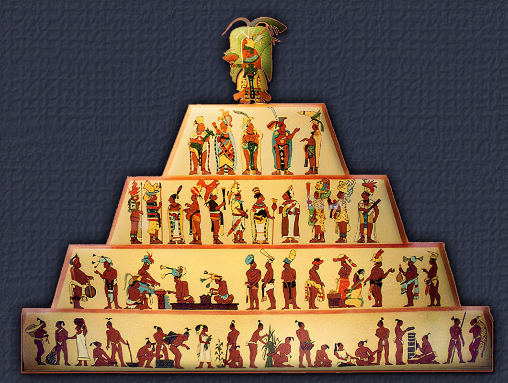
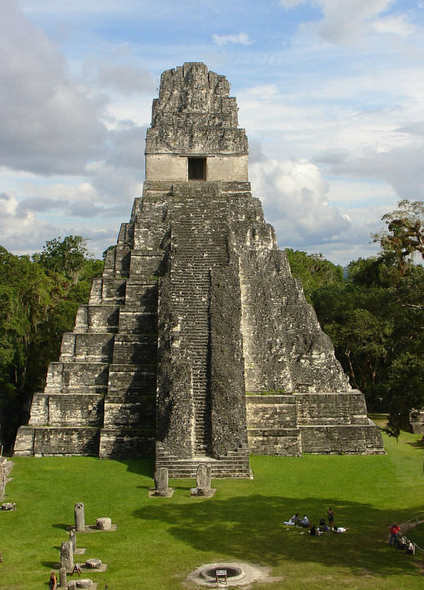
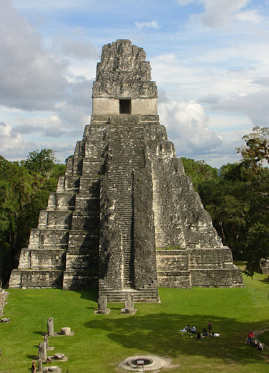
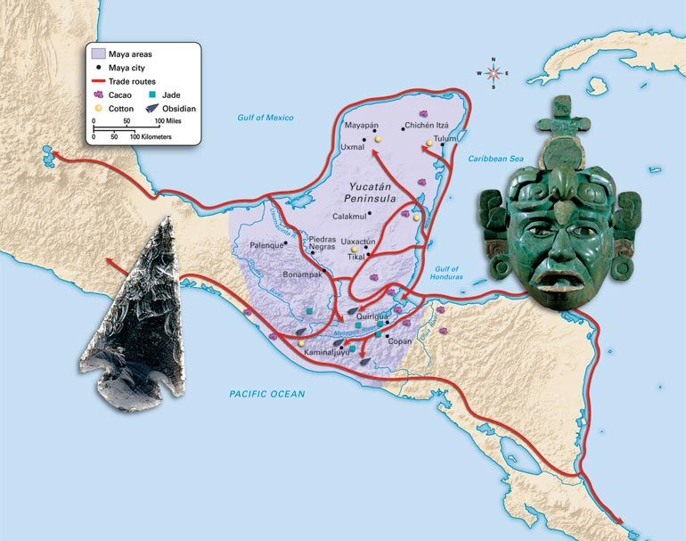
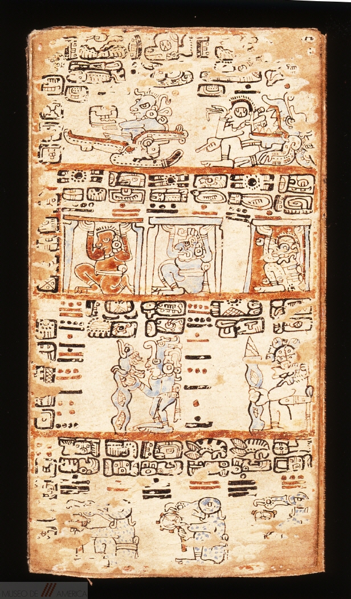
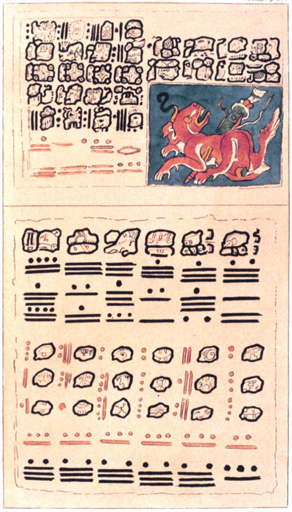

Mayan Civilization is divided into three Periods: The Pre-Classic Period from (1200B.C. – A.D. 250), the Classic Period from (A.D. 250 to 900 A.D.) and the Post-Classic period from (900 A.D. – 1508 A.D.) (Shoman, 2011, p.2). The Classic Period being the period where the Mayan Civilization according to Historians saw its peak and made great achievements in sectors that had appeared in the pre-Classic period such as mathematics, astronomy, arts, architecture and writing and also the formation of a belief system (Shoman, 2011, p.2).
During the Classic Mayan Period, something that became more developed was a system of government. The Mayans would rule cities instead of an Empire like the Aztecs and the cities would each have their own King and Queen. The Mayans also had a Hierarchy or social classes in today’s age and at the very bottom were the Peasants while at the very top was the King and queen called “Halach Uinic”. The position of king was hereditary as well as the “Batabs” that were chosen from the nobles which was also a hereditary position.
 Along with a government system, the Mayans developed a complex Religion/belief system. The Mayan religion was one which praised many gods like many other religions from around the world but also consisted of ritual ball games, human sacrifices and was also closely associated with astronomy. Through their study in astronomy, they were able to create a very precise and accurate calendar. According to Michael D. Coe’s book the four codices or Mayan Books are “completely ritual or ritual astronomical” (“The MAYA”, 2005, p. 212).
Along with a government system, the Mayans developed a complex Religion/belief system. The Mayan religion was one which praised many gods like many other religions from around the world but also consisted of ritual ball games, human sacrifices and was also closely associated with astronomy. Through their study in astronomy, they were able to create a very precise and accurate calendar. According to Michael D. Coe’s book the four codices or Mayan Books are “completely ritual or ritual astronomical” (“The MAYA”, 2005, p. 212).
  As the cities began to expand and become more complex, certain jobs needed to be specialized on and so Job Specialization was achieved during the classic period. As cities grew so did the populace and so agriculture needed to be specialized in so that it can feed the growing population. So, Mayans would practice two types of agriculture which was and Extensive system which was a slash and burn technique and the Intensive System which was more labor and resource intensive and so kitchen gardens were made, terrace systems, raised field and more. Not only was agriculture specialized in but also in places such as architecture and arts. One of Tikal’s ruins as portrayed on the picture to the right, it shows the impressiveness of the type of architecture that Mayans were capable of doing.
 As the cities began to expand and become more complex, certain jobs needed to be specialized on and so Job Specialization was achieved during the classic period. As cities grew so did the populace and so agriculture needed to be specialized in so that it can feed the growing population. So, Mayans would practice two types of agriculture which was and Extensive system which was a slash and burn technique and the Intensive System which was more labor and resource intensive and so kitchen gardens were made, terrace systems, raised field and more. Not only was agriculture specialized in but also in places such as architecture and arts. One of Tikal’s ruins as portrayed on the picture to the right, it shows the impressiveness of the type of architecture that Mayans were capable of doing.
 Mayans also began trading which became an achievement for many cities since some would make great money and would control important trading routes making them more powerful Mayan cities than the others. Tikal was one such city since it was close to rivers that were connected to the Gulf and to the Caribbean making it ideal for trading, giving it resources necessary to expand and grow (Phillips, 2008, p. 298). Another Mayan city whose economy thrived by trading was the Mayan city Kaminaljuyu in the southern Mayan region, by mostly trading obsidian (Phillips, 2008, p. 299). Apart from trading, Mayans invented a very complex way of writing known as Hieroglyphics. According to caracol.org These hieroglyphs were pictures or symbols that mean something, from either a word or a sound. When the hieroglyph means a whole word it a known then as a logograph and those that is only a sound or part of a word are known as phoneme. The picture beside this is the Madrid codex, a book out of only 4 in existence around the world (“Medieval Manuscripts”, N/A). The book along with the other 3 prove the hieroglyphic writing of the Mayans.
 Mayan Mathematics and astronomy. The Mayans developed a fascinating concept of mathematics, the mathematics concept is important and fascinating since the Mayans were able to invent the Zero concept in their mathematics. Along with their mathematics, there was their interest in astronomy. Mayans have become famous because of their zero concept and ability to accurately predict eclipses. Just as in the picture of the Dresden codex, the numerical system of the Mayans is shown. Michael D. Coe explains the use of the numbers and its difference compared to other numerical systems such as the Hindu which increases from right to left, the Mayan’s is a vigesimal notation and would count from bottom to top in vertical columns (“The MAYA”, 2005, p. 224). Michael also explain its use in the Mayan calendar associating it with the stars and sun, further depicting their knowledge on the stars.